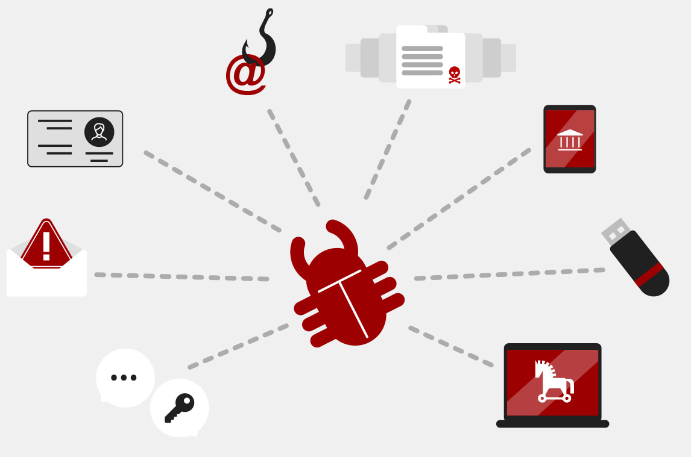
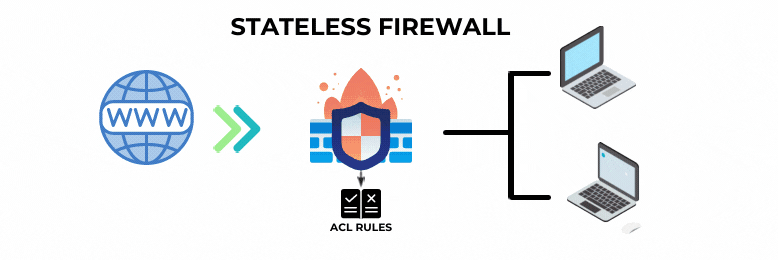
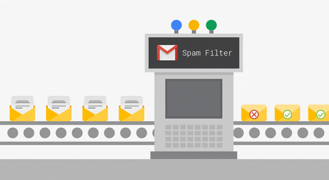

Početak antivirusnog softvera predstavlja 1971. godina.
Te godine je prvi računalni virus pod nazivom Creeper zarazio računala proizvođača Digital Equipment Corporation. Stoga je američki računalni programer Ray Tomlinson razvio Reaper, program za brisanje virusa.
Međutim, to nije bio pravi antivirusni program. Prvo zabilježeno uklanjanje računalnog virusa stvarnim antivirusnim programom bilo je 1987. godine kada je njemački stručnjak za računalnu sigurnost Bernd Robert Fix osmislio program za uklanjanje virusa Vienna.
Također, iste godine osmišljena su još dva antivirusna alata, a to su FushShot Plus i Anti4us.
Ti alati više ne postoje, ali se smatraju prvim antivirusnim softverom koji je imao sposobnost rješavanja problema i pronalaženja rješenja brže od klasičnih metoda.
Početak antivirusnog softvera predstavlja 1971. godina.
Te godine je prvi računalni virus pod nazivom Creeper zarazio računala proizvođača Digital Equipment Corporation. Stoga je američki računalni programer Ray Tomlinson razvio Reaper, program za brisanje virusa.
Međutim, to nije bio pravi antivirusni program. Prvo zabilježeno uklanjanje računalnog virusa stvarnim antivirusnim programom bilo je 1987. godine kada je njemački stručnjak za računalnu sigurnost Bernd Robert Fix osmislio program za uklanjanje virusa Vienna.
Također, iste godine osmišljena su još dva antivirusna alata, a to su FushShot Plus i Anti4us.
Ti alati više ne postoje, ali se smatraju prvim antivirusnim softverom koji je imao sposobnost rješavanja problema i pronalaženja rješenja brže od klasičnih metoda.
Od tada nadalje započinje razvoj antivirusnih softvera (nisu bili izostavljeni ni sigurnosni softveri) u smjeru zaštite korisnika i tvrtki sve do danas. Iz dana u dan dolazi do raznih kibernetičkih napada i stvaranja novih virusa diljem svijeta što rezultira razvoj i unapređenje sigurnosnih softvera.
O sigurnosnim softverima
Sigurnosni softver je bilo koji softver koji pruža zaštitu računalima, mobilnim uređajima i mrežama od virusa, upada, neovlaštenog pristupa i drugih prijetnji. Također, može braniti podatke, korisnike, sustave i tvrtke od mnogo prijetnji i poboljšati poslovnu i informacijsku sigurnost. Ako organizacije i korisnici rade bez sigurnosnog softvera ili koriste zastarjela rješenja, izloženi su mnogim zlonamjernim softverima. Kako bi zaštitile svoje mrežno okruženje, organizacije mogu koristiti sigurnosne uređaje te sigurnosni softver i aplikacije.
Sigurnosni uređaj je uređaj ili poslužitelj koji može spriječiti ulazak nepoželjnog prometa u mrežu. U sigurnosne uređaje spadaju uređaji za otkrivanje upada, sigurnosni uređaji za e-poštu i uređaji za objedinjeno upravljanje prijetnjama. Uređaji za otkrivanje upada mogu upozoriti sigurnosne timove na prijetnje kada se one pojave u mreži. Sigurnosni uređaji za e-poštu služe za otkrivanje i blokiranje prijetnji koje se prenose e-poštom kao što su zlonamjerni softveri i neželjena pošta. Uređaji za objedinjeno upravljanje prijetnjama mogu upravljati antivirusnom zaštitom, mogu otkriti i spriječiti upade itd.
Sigurnosni softver i aplikacije koji se mogu instalirati na uređaje su npr. napredni softver za zaštitu od zlonamjernog softvera i sigurnosne aplikacije za e-poštu. Također, oni mogu pružiti pomoć organizacijama kako bi zaštitile prijenosna računala, mobilne uređaje i poslužitelje od mnogih prijetnji.
Zlonamjerni softveri
 Na suprotnoj strani sigurnosnih softvera nalaze se zlonamjerni softveri (eng. malware) koji znatno mogu ugroziti korisnikovu sigurnost, podatke, rad uređaja kojim se koristimo, bilo to mobitel ili računalo. Na računalo korisnika dolaze bez njegovog znanja te uzrokuju štetu, smetnje u sustavu ili krađu podataka.U današnje vrijeme razne zlonamjerne softvere nazivamo virusi, ali to je samo jedna vrsta zlonamjernog softvera koji može doći na korisnikovo računalo. Pojam obuhvaća mnogo širi spektar zlonamjernih softvera osim virusa kao adware, spyware (špijunski softver), trojanski konj, crvi, rootkit te ransomware (ucjenjivački softver). Svi navedeni zlonamjerni softveri slijede temeljni obrazac koji upravo ukazuje na to da se uređaj korisnika zarazi nakon što nesvjesno preuzme ili instalira zlonamjerni softver (često) klikom na zaraženu poveznicu ili posjeti zaraženu web stranicu. Zlonamjerne softvere razlikujemo po načinu na koji rade i kako djeluju na uređaj. Važnost poznavanja zlonamjernih softvera je jedan od načina za zaštitu podataka i uređaja.
Saznajte više o vrstama zlonamjernih softvera klikom na gumb: Vrste
Vrste sigurnosnih softvera
Antivirusni programi
Programi koji su namijenjeni zaštiti, otkrivanju i uklanjaju računalnih virusa te drugih zlonamjernih programa koji dovode do oštećenja podataka i računalnih programa. Iako možete poznavati računalne prijetnje i biti na oprezu, ipak nije sve moguće spriječiti bez pomoći ovakvih programa ili čak potpunog antivirusnog paketa. Antivirusni programi možda ne mogu spriječiti sve vrste virusa ako se oni nalaze u sustavu računala te mogu upozoriti na njih još prilikom njihovog dolaska u računalni sustav.Općenito su antivirusni programi dizajnirani da otkriju, obavijeste korisnika i uklone virus na računalu. Kako dolazi do razvoja računalnih virusa, tako se paralelno razvijaju i antivirusni programi. Današnji antivirusni programi su osmišljeni tako da prepoznaju zlonamjeran softver, kod koji može doći prilikom pokušaja instalacije aplikacija koje ih sadrže ili onih koji dolaze s internet preglednika. Na primjer, ransomware kod, trojanski konj, crv (eng. worm) i još mnogi drugi.
Način na koji rade
Pored toga što antivirusni program može upozoriti na sigurnosne prijetnje i prepoznati zlonamjeran softver pohranjen na web stranici ili u nekoj aplikaciji prilikom instalacije, oni služe za uklanjanje virusa iz računala. Ovo rade u tri koraka: traženje virusa, otkrivanje virusa i uklanjanje virusa.Svaki antivirusni program ima opciju skeniranja uređaja, to jest mogućnosti pregleda datoteka koje su pohranjene na uređaju, od one koju svakodnevno koristite do onih koje su pohranjene duboko u memoriji. Pored toga antivirusni program uz već spomenute alate za uklanjanje zlonamjernog softvera sadrži i opciju stavljanja u karantenu zlonamjernog softvera.
Odabir antivirusnog programa
Tijekom odabira antivirusnog softvera važno je uzeti u obzir mnoge čimbenike kao što je npr. kompatibilnost s određenim operacijskim sustavom. Isto tako, važno je da odabrani softver pruža snažnu zaštitu od poznatih prijetnji zlonamjernog softvera i da dobro otkriva i blokira nepoznate prijetnje. Uz to, neki antivirusni softveri mogu usporiti uređaj, pa je bitno odabrati softver koji pruža čvrstu zaštitu i istovremeno ne troši mnogo resursa sustava.Također, neki antivirusni softveri mogu pogrešno identificirati datoteku kao prijetnju zbog čega može doći do gubitka važnih datoteka ili podataka. Stoga je odabir softvera koji ima nisku stopu lažno pozitivnih rezultata bitan čimbenik. Politiku privatnosti tvrtke koja proizvodi antivirusni softver također treba uzeti u obzir jer su zaštita podataka o klijentima i poštivanje privatnosti vrlo važni faktori. Ono što je još bitno spomenuti je trošak. Što je više sigurnosnih značajki koje antivirusni softver pruža, cijena je veća.
Ako želite najbolju zaštitu u moru računalnih programa koji mogu sa sobom nositi mnoge zlonamjerne softvere preporučaju se najbolji antivirusni programi koji su trenutno na tržištu: Najbolji u 2023.
Firewall (Vatrozid)
Firewall ili vatrozid sigurnosni je sustav ili grupa sustava koja služi za filtriranje prometa između lokalne te javne mreže čime štiti podatke od neautoriziranih korisnika ili zlonamjernih programa. Može se reći da ima ulogu „vrata“ među mrežama koje pokušavaju uspostaviti vezu. Pravila rada vatrozida određuje administrator, a predstavljaju odgovor na zahtjeve za uspostavljanjem veze među mrežama ovisno o procjeni njihove sigurnosti, a ista vrijede u oba smjera, odnosno i od vanjske mreže prema korisniku u zaštićenoj mreži, ali i od korisnika prema vanjskim mrežama. Vatrozid može biti postavljen na osobno računalo ili može štititi računalnu mrežu neke institucije.
Razlikujemo dvije vrste vatrozida: hardverski i softverski. Hardverski vatrozid zaseban je uređaj s vlastitim hardware-om i software-om priključen na računalo koji kontrolira cjelokupan mrežni promet. Obično se koriste na mrežama gdje je povezano više računala. Glavna prednost je što su odvojeni od računala pa ukoliko se na računalu pojavi virus, on neće onemogućiti rad vatrozida. S druge strane, softverski vatrozid je programska podrška na računalu koja također filtrira mrežni promet, no za razliku od hardverskog, jedino na računalu na kojem je instalirano te se pritom koristi i procesorom te RAM-om samog računala što ga čini osjetljivijim na napade.
Podjela
Vatrozide možemo podijeliti i s obzirom na način pregleda paketa na: stateless filtere paketa, stateful filtere paketa i proxy vatrozid.Stateless filteri paketa
 Stateless filteri paketa provjeravaju pakete između računala na mreži tako da uspoređuju svaki paket sa skupom pravila koja treba zadovoljiti. Pravila se obično baziraju na izvornoj i odredišnoj IP adresi, protokolima (npr. TCP) i izlaznim i odredišnim portovima.Ovaj tip vatrozida danas gotovo i da se ne koristi (npr. u ruterima u izoliranim relativno sigurnim okruženjima poput korisnikove lokalne mreže) upravo jer ne pamti ništa o već obrađenim paketima, a takvi filteri su osjetljivi na podvale.
Stateful filteri paketa
 Sljedeći oblik ima jednaka pravila kao i stateless, ali ključna razlika je što podaci mogu proći vatrozid u oba smjera.
Dakle, kada paket dođe do vatrozida, on prvo provjerava postoji li taj ulaz za tok već u predmemoriji.
Ako da, on se propušta, a inače se briše njegov unos iz predmemorije i tako se blokira tok.
Sljedeći oblik ima jednaka pravila kao i stateless, ali ključna razlika je što podaci mogu proći vatrozid u oba smjera.
Dakle, kada paket dođe do vatrozida, on prvo provjerava postoji li taj ulaz za tok već u predmemoriji.
Ako da, on se propušta, a inače se briše njegov unos iz predmemorije i tako se blokira tok.
Vatrozid može imati i vremensko ograničenje u slučaju da je tok predugo neaktivan, tada se izbacuje ulaz u predmemoriju čime se blokira tok.
Proxy vatrozid
Danas se ipak najviše koristi, ali i unaprjeđuje proxy vatrozid. On filtrira promet na razini aplikacije (pomoću URL-ova) i to na temelju polja zaglavlja, veličine poruke i sadržaja, a kako razumije protokole poput FTP-a ili HTTP-a može otkriti ako neka aplikacija pokušava zaobići vatrozid na određenom portu. On se također može ponašati i kao server. Dakle, kada proxy poslužitelj primi neki zahtjev, on se obrađuje te se ili prosljeđuje do željenog poslužitelja ili odbacuje ako ne ispunjava odgovarajuće zadane uvjete. To je također praktično jer korisnikovi podaci ostaju anonimni budući da zahtjev dolazi do odredišnog poslužitelja putem proxy poslužitelja. Ovdje također pripadaju i tzv. next generation firewalls koji štite od potencijalnih cyber napada i krađe podataka, a njihova specifičnost se očituje u uspostavi kontrole podataka na ulazu i izlazu iz mreže kao i kod ostalih vatrozida, ali i na kontroli uređaja koji prenose podatke.Trenutno najbolje firewall alate možete vidjeti klikom na sljedeću poveznicu: Firewall u 2023.
Sigurnosni softver za mrežu
Namjena ovih softvera je zaštita korisnika na mreži. Napravljeni su sa svrhom zaštite mrežnih podataka i veza koje se prenose između računala unutar mreže. Štite korisnika od raznih mrežnih prijetnji neovisno o tome gdje se nalazite i na koju ste mrežu povezani. Neovisno o tome nalazite se u vlastitom domu povezani na vlastiti ruter, javnoj internet mreži, putujete ili obavljate internet kupovinu. Za potpunu sigurnost korisnikovih mrežnih podataka i lokacije tokom svih aktivnosti na internetu tu je VPN (skraćeno od Virtual private network).Virtualna privatna mreža (eng. Virtual private network ili skraćeno VPN) je učinkovit u sakrivanju Vaše IP adrese tijekom pretraživanja interneta kako bi ostali potpuno anonimni na mreži. Omogućuje Vam pristup nekim stranicama koje ne možete posjetiti u Vašoj državi. Također, ne pohranjuje promet na mreži, IP adresu ni mrežne podatke. Pored svega toga, obiluje opcijama skeniranja datoteka i aplikacija protiv zlonamjernih programa koje se preuzimaju na računalo, blokira sva moguća praćenja aktivnosti i sakriva reklame internetskih stranica.
Istaknuti VPN-ovi 2023.
Anti-spam softver
Jedan od sigurnosnih softvera sa svrhom filtriranja dolazne e-pošte kojim se nastoje otkriti opasnosti putem iste. Sadrže protokole koji dolaznu e-poštu filtriraju i određuju koja je među njima neželjena e-pošta. Time se sprječava spam, to jest neželjena pošta, ali i phishing napadi. Također, omogućuje se korisniku pregled e-pošte koja je svrstana kao neželjena.

Jedan od poznatijih anti-spam softvera je Mailwasher
Literatura